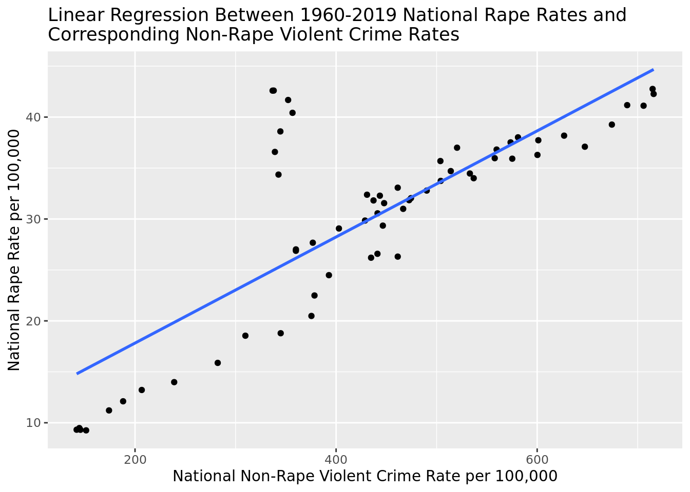

Rows: 3,115
Columns: 21
$ State <chr> "Alabama", "Alabama", "Alabama", "Alabam…
$ Year <int> 1960, 1961, 1962, 1963, 1964, 1965, 1966…
$ Data.Population <int> 3266740, 3302000, 3358000, 3347000, 3407…
$ Data.Rates.Property.All <dbl> 1035.4, 985.5, 1067.0, 1150.9, 1358.7, 1…
$ Data.Rates.Property.Burglary <dbl> 355.9, 339.3, 349.1, 376.9, 466.6, 473.7…
$ Data.Rates.Property.Larceny <dbl> 592.1, 569.4, 634.5, 683.4, 784.1, 812.1…
$ Data.Rates.Property.Motor <dbl> 87.3, 76.8, 83.4, 90.6, 108.0, 106.9, 13…
$ Data.Rates.Violent.All <dbl> 186.6, 168.5, 157.3, 182.7, 213.1, 199.8…
$ Data.Rates.Violent.Assault <dbl> 138.1, 128.9, 119.0, 142.1, 163.0, 149.1…
$ Data.Rates.Violent.Murder <dbl> 12.4, 12.9, 9.4, 10.2, 9.3, 11.4, 10.9, …
$ Data.Rates.Violent.Rape <dbl> 8.6, 7.6, 6.5, 5.7, 11.7, 10.6, 9.7, 10.…
$ Data.Rates.Violent.Robbery <dbl> 27.5, 19.1, 22.5, 24.7, 29.1, 28.7, 32.0…
$ Data.Totals.Property.All <int> 33823, 32541, 35829, 38521, 46290, 48215…
$ Data.Totals.Property.Burglary <int> 11626, 11205, 11722, 12614, 15898, 16398…
$ Data.Totals.Property.Larceny <int> 19344, 18801, 21306, 22874, 26713, 28115…
$ Data.Totals.Property.Motor <int> 2853, 2535, 2801, 3033, 3679, 3702, 4606…
$ Data.Totals.Violent.All <int> 6097, 5564, 5283, 6115, 7260, 6916, 8098…
$ Data.Totals.Violent.Assault <int> 4512, 4255, 3995, 4755, 5555, 5162, 6249…
$ Data.Totals.Violent.Murder <int> 406, 427, 316, 340, 316, 395, 384, 415, …
$ Data.Totals.Violent.Rape <int> 281, 252, 218, 192, 397, 367, 341, 371, …
$ Data.Totals.Violent.Robbery <int> 898, 630, 754, 828, 992, 992, 1124, 1167…A Comparison of Pre-and Post-2013 Statistics on Rape in the United States
Report
Introduction and Data
Beginning in 2013, Unified Crime Reporting, a program tracking nationwide statistics on crime through collaboration between the Department of Justice and FBI, updated the 80-year-old definition of rape previously known as “carnal knowledge of a woman forcibly and against her will”, to a more encompassing definition that describes it as “the penetration, no matter how slight, of the vagina or anus with any body part or object, or oral penetration by a sex organ of another person, without the consent of the victim” (Department of Justice). Overall, we wanted to investigate whether the quantity of officially tracked nationwide rapes changed and whether a reasonable reason for the change could be the expansion in definition that occurred in 2013. Literature on the subject indicates a significant difference in reported cases due to the change, with one study estimating that “the incidence of sexual assault reported in UCR was underestimated by 40%” under the old definition in comparison to the new one (Briere 2014) (Bierie and Davis-Siegel 2014). Consequently, we believe that the UCR’s altered definition of rape will lead to a statistically significant increase in the number of rapes reported during and after 2013 as compared to before 2013.
In order to address our research question, we will be using a data set on crime collected through Unified Crime Reporting that we accessed through the CORGIS Dataset Project. Specifically, our data set has information on distinct crime rates and totals across every US state for every year from 1960 to 2019. The crimes for which data are available are divided into two main categories: property and violent. Property crime refers to burglary, larceny, and motor-related crime, while violent crime refers to assault, murder, rape, and robbery. From these, we will be looking at the categorical variables of state and year, and the associated quantitative variables of rates and total violent crime, and rates and total rapes. Our data set reports rates as per 100,000 people. In terms of ethical concerns, while we are working with aggregate and not personally identifiable information, our research is still working with data on a sensitive subject (rape) that has real-life impacts beyond what our data set includes. As such, we want to be cognizant of the sensitive nature of our research when discussing our results later on. It is also important to note that rape is one of the most under-reported crimes, so the data set likely does not include all instances of rape in the United States. Therefore, if these values were included in the data set, there is a possibility that the statistical trends as well as our conclusions about our hypothesis could change.
Methodology
Wrangling the data in our original data set was important in able to create proper exploratory data visualizations relevant to our research process. Specifically, we condensed the data set to only include the relevant categories (state, year, population, and statistics having to do with rapes and total violent crimes). Then we created a new observation for every year that represented the entire United States and calculated the respective rape and violent crime rates by summing every state’s raw totals of rape and violent crime and dividing it by the sum of the state’s populations. We also created two new variables that keep track of the rate and total of all non-rape violent crimes by taking the difference in both total and rates between all violent crimes and rapes.
To understand the viability of our hypothesis, we wanted to understand two things: a visualization of the change of rapes reported as a national total and a visualization of whether this change is relevant. We wanted to understand if there was a general uptick in violent crimes, which would explain an increase in rapes nationally. So, we set up a visualization of just rapes nationally, and we set up a visualization of violent crimes excluding rapes (in bar chart form). As we can see, while the amount of rapes aggregated nationally increased, the amount of violent crimes excluding rapes barely changed, and even decreased between 2012 and 2013.
The above two visualizations help to understand and contextualize trends in rapes per 100,000 at the national level. We needed to first make the values of rape cases comparable between states and years. As seen in the dataset, each state has a different population, thus a rate of Rapes per X amount of people is necessary to compare these states. 100,000 is simply a number chosen to convert the data into rates, however, virtually any larger number could be used for this metric. In the above plot, we see the yearly rates of rape for every year in our data set, throughout which, as visible above, the largest year-to-year increase is from 2012 to 2013, exactly the time when the change in definition was implemented. This comes in the context that as shown by our plot, the rate of rape per 100,000 people has generally increased between 1960 and 2019, but, by 2012 was in the midst of a major decline that started in the 1990s. This makes the large increase from 2012 to 2013 stand out within our plot and helps us to partially begin answering our research question since it is now clear that there was a large increase in the national rate of rape from right before the definition change to right after, even though the significance of the increase requires a hypothesis test to confirm.
Below, in our second plot, we more closely examine this sudden difference in the national rape rate and compare it to changes in all other, non-rape, violent crimes. From the side-by-side bar plots, then, it is clear that while the rate of rape clearly grew from pre-2013 to post-2013, the rate of all other violent crimes stayed fairly constant. This seemingly eliminates a large increase in all violent crime from 2012 to 2013 as the primary cause for the corresponding increase in rapes.
Now, looking at our data at a state level, we examined the change in the rate of rape for every US state from 2012 to 2013, when the change in definition was implemented. Above we can see that for every state but South Carolina, when the definition of rape was changed between 2012 and 2013, the rate of rape increased. That is, in 50 out of 51 states (including the District of Columbia), or in over 98% of the United States, the rate of rape increased immediately after the expansion in definition, further supporting the magnitude of the difference in rape rates from 2012 to 2013.
This second plot expands on this exploration of rape rates at the state level, once again showing through box plots for 2012 and 2013 that rape rates tended to increase from 2012 to 2013. Both box plots were created using states as each data point. The 2013 box plot has a larger center and is generally shifted to the right when compared to its 2012 counterpart. That is, in 2013 there was a higher median rape rate across the nation, with more upper outliers and a more extreme outlier.
This final visualization compares non-rape violent crime across the fifty US states and the District of Columbia between 2012 and 2013. Similarly to the national trend, the above plot exposes that virtually every US state did not see a major change in their non-rape violent crime rate between 2012 and 2013 (they stayed fairly constant), during the same period that almost all of them saw increases in their respective rape rates. Once again, this seems to indicate that the increase in reported rapes was not driven by a broader increase in all violent crimes.
Thus, we first want to run a hypothesis test for difference of means of state-level rates in 2012 and 2013 of rape to discern whether the increase between the rates from 2012 to 2013 is statistically significant at an alpha level of 0.01. This will allow discerning whether the change in rape rates we observed could reasonably be explained by random variation or whether the two populations in fact had different means and the 2013 levels were higher. Then, if the difference proves to be statistically significant we want to explore the historical relationship between the rates of non-rape violent crimes and rapes to create a linear model relating both quantities to show how the model becomes less accurate post-2012. This would then imply a change between 2012 and 2013 that impacted rape rates that were not changes in general violent crime baselines, which would offer evidence supporting our hypothesis that the change in definition in the UCR could be a conceivable reason for the increase in the national rape rate. In other words, through our linear regressions, we want to confirm a change in the relationship between non-rape violent crime and rapes that began in 2013, to both rule out an overall increase in violent crime as a possible confounding factor in the increase in rapes in 2013 and show that there is a clear disruption in the historical trend of rapes in 2013.
# A tibble: 2 × 2
Year mean_rate
<int> <dbl>
1 2012 30.9
2 2013 40.3Our point estimate for the mean difference between the state-level rate of reported rates in 2012 and 2013 is:
\(\overline{x}_{2013} - \overline{x}_{2012} = 9.415\)
Where \(\overline{x}_{2013}\) is the sample mean of state-level rape rates in 2013 and \(\overline{x}_{2012}\) is the sample mean of state-level rape rates in 2012.
Our null hypothesis is then:
\(\mu_{2013} = \mu_{2012}\)
Our alternative hypothesis is then:
\(\mu_{2013} > \mu_{2012}\)
Where \(\mu{2013}\) is the population mean of state-level rate rapes in 2013 and \(\mu{2012}\) is the population mean of state-level rape rates in 2012.
# A tibble: 1 × 1
p_value
<dbl>
1 0.0005The hypothesis test for a difference in means between the state-level rate of reported rates in 2012 and 2013 yielded a p-value of 0.0005.
The following regression plots are used to explain whether the variability of national rape rates can be explained by the non-rape violent crimes rate. In a normal situation, as non-rape violent crime rate increases, we would expect the national rape rate to increase at some proportional rate. Therefore, we expect to see relationship between the two variable to be a positive, linear regression.
# A tibble: 2 × 5
term estimate std.error statistic p.value
<chr> <dbl> <dbl> <dbl> <dbl>
1 (Intercept) 1.88 1.03 1.82 7.44e- 2
2 non_rape_rate 0.0602 0.00218 27.6 2.49e-32[1] 0.9372598The regression plot above contains crime data before 2013, before the definition change. Thus, the plot matches our predictions that the slope is fairly linear and positive. The R^2 value is 0.9373 for this fit.
# A tibble: 2 × 5
term estimate std.error statistic p.value
<chr> <dbl> <dbl> <dbl> <dbl>
1 (Intercept) 7.41 2.38 3.11 2.88e- 3
2 non_rape_rate 0.0521 0.00518 10.0 2.61e-14[1] 0.628789
# A tibble: 4 × 5
term estimate std.error statistic p.value
<chr> <dbl> <dbl> <dbl> <dbl>
1 (Intercept) 1.88 1.08 1.74 8.67e- 2
2 non_rape_rate 0.0602 0.00228 26.4 2.67e-33
3 after_20132013-2019 28.6 47.5 0.602 5.49e- 1
4 non_rape_rate:after_20132013-2019 -0.0339 0.138 -0.246 8.07e- 1[1] 0.9351682The two regression plots above contain crime data from 1960-2019, including the crime data following the change of the definition of rape. In the first plot, we calculated an R^2 value for the regression plot as a single linear model. The R^2 value for this plot is 0.6288. The second plot fits the model into two regression lines, one for 1960-2012 and one for 2013-2019 data. The R^2 value for the linear regression fit of both chunks of time is 0.9352.
Results
From the hypothesis test conducted above producing a p-value of 0.0005, lower than our alpha level of 0.01, we can confidently reject our null hypothesis and say that the increase in rape rate from 2012 to 2013 is statistically significant. There is strong evidence to support that the true mean of state-level rape rates was higher in 2013 than in 2012, the same interval of time in which the broadened definition of rape was put into place by the UCR, establishing a clear correlation between these two events. This supports our earlier graph showing a significant increase in the reported rape rate from 2012 to 2013.
In terms of possible confounding factors, from the various \(R^2\) values stemming from the linear models fitted above it is evident that the Non-Rape Violent Crime Rate explained about 93.7% of the variability in rape rates at the national level when the data is restricted to pre-2013 years. When not restricted to pre-2013 years, unless a model is fitted to interact with whether a data point is pre or post-2013, the amount of variability in Rape Rates explained by Non-Rape Violent Crime Rates decreases significantly to 62.9%. When we create an interactive model that is allowed to distinguish between pre and post-2013 years, the amount of variability in Rape Rates explained by Non-Rape Violent Crime Rates increases again significantly to 93.5% and achieves a similar level of predictive power as the pre-2013 model. This communicates that between 2012 and 2013, a significant change occurred that changed the relationship between the national rates of Rape and Non-Rape Violent Crime. In other words, there was a strong linear relationship in pre-2013 years that breaks down after 2013 unless a year relative to 2013 is included in the model as an explanatory variable. This allows us to rule out an overall increase in violent crime as a possible confounding factor in the increase in rapes in 2013 and shows between 2012 and 2013 there is a clear disruption in the historical trend of rapes’ relationship with other types of violent crime that could have been caused by our change in definition. This conclusion is supported by our earlier exploratory graphs comparing rape and non-rape violent crime rates and their changes from 2012 to 2013.
Discussion
As stated above, it is clear from our research, particularly with the results hypothesis test, that there was a clear, statistically significant (even with a very low alpha level) increase in the rate of national rapes from 2012 to 2013. This indicates that the true levels of rapes from 2012 to 2013 in the United were different, at least in terms of reportable rapes. In terms of the cause of that increase, while our linear models helped strengthen a possible argument to link the increase to the change in definition, it is still uncertain whether other confounding factors could have led to this large year-to-year increase from 2012 to 2013. However, our linear models do show that the change was not driven by a similarly large increase in other types of violent crime and help rule out that as a possible confounding factor. In fact, a once strong linear relationship (\(R^2\) > 0.9) between non-rape violent crimes rates and rape rates changed and became significantly weaker (\(R^2\) < 0.65) in post-2013 years. Thus, it is clear that something critical happened between 2012 to 2013 to impact rape rates, and that whatever that change was, it does not seem to have been an aberration since rape rates did not jump back down shortly after 2013. While this makes the UCR’s change a compelling reason, further investigation is needed to confirm a causal relationship and rule out all the confounding variables.
One of the primary limitations of the project was the reliability of reported rapes as a metric regardless of the definition. Particularly, rapes are almost universally underreported due to the fear that victims have of retribution, not being believed, or simply reliving a traumatic experience. In our whole analysis, this underreporting bias was not considered and if looked at more closely could lead to some confounding factors our analysis did not investigate further. For example, a growing social conciseness of rapes that makes it easier for victims to report, more legal protections for women to report, and broadened laws on rape (that make it more worthwhile to report a rape if the goal is getting the assailant charged with a crime), could all have experienced changes in the early 2010s that at least partially explain the 2012 to 2013 increase. If this were to be the case, this would imply that due to an outdated definition, rapes in the United States were being significantly underreported.
Our analysis could also have been strengthened by further exploration of modeling techniques. More explanatory variables could have been fitted to see if they too lost predictive power in 2013, such as specific violent crimes or non-violent crimes (taking examples from the data set). The importance of the distinction between mean state rate and national rate could also have been better explored and explained in our analysis, and whether using one for our hypothesis testing and the other for modeling was of significance. The outlier of South Carolina in our data set could have also been explored further, as that could have generated possible areas of investigation that could then be applied to the national rape rate levels and could help to further discern whether the UCR definition change was a plausible cause of the increase in reported rapes. Additionally, the project as a whole would have been strengthened by including actual rape cases brought to trial as another area of exploration to create a better picture of the rape situation in the United States. This would have involved bringing in additional data sets and dealing with legal inconsistencies that states have in defining and prosecuting rape. Overall, while our analysis was robust, it is clear that there could be improvements and extensions to it and that it only paints a small picture of a large, complicated, and sensitive topic. Possible avenues of exploration or future researchers wishing to build off this project include conducting similar investigations on other significant definition changes in crime reporting, the above-discussed exploration of the existence of a change between 2012 and 2013 rape cases that were prosecuted, and investigating the definition of rape as a crime (different to its reporting definition) around the United States and relationship that has with reported and prosecuted rapes.
References
Bierie, David M., and James C. Davis-Siegel. 2014. “Measurement Matters.” Sexual Abuse 27 (5): 443–59. https://doi.org/10.1177/1079063214521470.